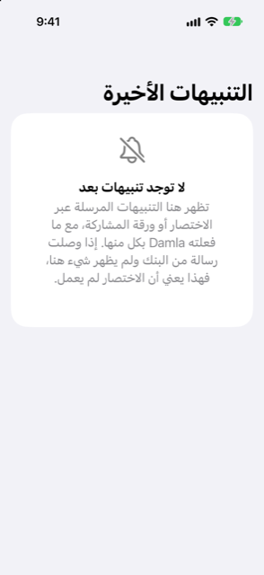

الدليل › الالتقاط التلقائي
ما تتجاهله Damla، وكيفية التراجع عن تنبيه
الإعلانات والحدود والتذكيرات ورموز التحقق يتم تجاوزها؛ كيف تسترجع قرارًا خاطئًا.
لا تسجّل Damla رسالة بنكية إلا إذا كانت تفيد بأن الأموال تحركت فعلًا. الإعلانات وإشعارات الحدود والتذكيرات ورموز الاستخدام الواحد تُتجاوز. وأي شيء تتخذ Damla بشأنه إجراءً يمكن التراجع عنه من شاشة واحدة.

متى تستخدمه
- وصلت رسالة إلى Damla ولم يتغير شيء، وتريد أن تعرف السبب.
- اتخذت Damla إجراءً بشأن رسالة لم يفترض التعامل معها، وتريد التراجع عنه.
- أعدت للتو إعداد اختصار (Shortcut) وتريد أن ترى ما تفعله Damla مع كل رسالة.
ما تتجاوزه Damla
الرسائل مثل هذه لا تُسجَّل أبدًا:
- رموز الاستخدام الواحد والموافقة (\"otp\"، \"verification code\"، \"do not share\"): تُهمَل، ولا تُحتفظ بالرسالة — لا في دفاترك، ولا في السجل، ولا تُكتب على القرص أبدًا.
- الإعلانات والعروض: صيغ مثل \"cashback\"، \"offer\"، \"rewards\"، \"congratulations\"، \"apply now\"، \"valid until\".
- إشعارات الحدود والأسعار: \"limit has been\"، \"limit is set\"، \"limit increased\"، \"interest rate\".
- التذكيرات: صيغ مثل \"reminder\"، \"don't forget\"، \"kindly pay\" و\"pay by\".
- مبالغ لم تتحرك بعد: رقم مكتوب مباشرة بعد \"over\" أو \"above\" أو \"more than\" أو \"exceeding\" أو \"up to\" أو \"minimum spend\"، أو جملة مبنية على \"if you\" أو \"you can\". هذا عرض أو حد، وليس مبلغًا مخصومًا.
- معاملة لم تقع: مرفوضة، أو غير ناجحة، أو فاشلة، أو مردودة، أو غير كافية.
- رسائل لا فيها شيء عن المال، مثل إشعار توصيل: تُهمَل، ولا تُحفظ، ولا تُسجَّل.
عندما تُتجاوز رسالة تتعلق بالمال، توسم بـ Ignored. يحمل سطر السجل أول كلماتها، وليس الرسالة كاملة، حتى يمكن رؤية القراءات الخاطئة لاحقًا. ليس كل تجاوز يترك سطرًا: الرسالة التي سلّمها اختصار (Shortcut) بينما هاتفك مفتوح، والتي أهملتها Damla، لا تُحفظ إطلاقًا. أما الرسالة التي تصل والهاتف مقفل فتُقرأ عند فتحك Damla في المرة التالية، وتُحفظ تلك القراءة.
ما لا يُتجاوز
الرسالة التي تفيد بأن الفاتورة جاهزة تصبح فاتورة متوقعة، وليست إنفاقًا. والمبلغ الذي يُخصم لاحقًا من البطاقة أو البنك لتسديدها هو المعاملة. وإشعار كشف حساب بطاقة (إجمالي مستحق مع حد أدنى للسداد) يُقرأ كشف حساب وينتظر مراجعتك. والتذكير بفاتورة سبقت لـ Damla ملاحظتها لا يضيف فاتورة ثانية: بل يحدّث تاريخ استحقاق تلك الفاتورة، ويقول السطر تذكير بفاتورة سبقت ملاحظتها. وأي شيء غير واضح ينتظر في صندوق الوارد بنقرة واحدة. ولا شيء يُنشئ التزامًا يُضاف دون أن تؤكد أنت.
التحقق مما حدث
- افتح الإعدادات، وانقر رسائل البنك وكشوف الحساب، ثم التنبيهات الأخيرة.
- اقرأ القائمة. كل رسالة مالية تعرض ما تم وما السبب: تمت الإضافة، أو بانتظارك في صندوق الوارد، أو مسجلة سلفًا، أو Ignored، أو ملاحظة، لا شيء للتسجيل بعد، إضافة إلى منذ متى. تحتفظ القائمة بأحدث 50 سطرًا.
- إذا وصلت رسالة مالية ولم يُدرج أي شيء، فالاختصار (Shortcut) لم يعمل. تحقق من الكلمة المفتاحية، ومن أنه مضبوط على التشغيل فورًا (Run Immediately)، ومن أن النص هو زر إدخال الاختصار الأزرق.
التراجع عن تنبيه
- في التنبيهات الأخيرة، اسحب إلى اليمين على تنبيه اتخذت Damla بشأنه إجراءً وانقر تراجع.
- أكِّد. ما يتم التراجع عنه:
- تنبيه أُضيف: تُحذف المعاملة التي أضافها. وإذا كانت تلك المعاملة قد سدّدت فاتورة، تعود الفاتورة مستحقة. - تنبيه تمت ملاحظته: تُنسي الفاتورة التي تمت ملاحظتها.
- يبقى السطر في القائمة مع كلمة \"Undone\" أمامه، حتى ترى ما حدث.
يظهر تراجع فقط على الأسطر التي اتخذت Damla فيها إجراءً من تلقاء نفسها ولا يزال الإجراء ساريًا: معاملة أضافتها ولا تزال في دفاترك، أو فاتورة ملاحظتها ولا تزال مفتوحة. أما الأسطر الموسومة بـ مسجلة سلفًا أو Ignored أو بانتظارك في صندوق الوارد فلا شيء لاسترجاعها.
السحب في الاتجاه الآخر يتيح حذف، الذي يزيل سطر السجل فقط. ومسح الكل يفرّغ القائمة؛ وتبقى المعاملات المضافة سلفًا.
من الجيد أن تعرف
مقالات ذات صلة
- كيف يعمل الالتقاط التلقائي
- رسائل البنك ورسائل البريد الإلكتروني
- الفواتير القادمة
- استكشاف الأخطاء وإصلاحها
هل هناك شيء غير واضح أو ناقص؟ اكتب إلى support@raveniq.ai واذكر الصفحة.